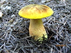

Atlas Grzybów
 Koźlarze
Koźlarze
 Maślaki
Maślaki
Borowiki
Borowik blednący
Borowik brązoworóżowy
Borowik brzozowy
Borowik ceglastopory

Borowik ceglastopory odmiana odbarwiona
Koźlarze
 Goryczak purpurowozarodnikowy
Goryczak purpurowozarodnikowy
 Koźlarz ałtajski
Koźlarz ałtajski
 Koźlarz babka
Koźlarz babka
 Koźlarz białawy
Koźlarz białawy
 Koźlarz brązowoszary
Koźlarz brązowoszary
Podgrzybki
Podgrzybek aksamitny
Podgrzybek brunatny
Podgrzybek brzoskwiniowy
Podgrzybek czerwonawy
Podgrzybek obciętozarodnikowy
Maślaki
 Borowiczak dęty
Borowiczak dęty
 Maślaczek pieprzowy
Maślaczek pieprzowy
 Maślak błotny
Maślak błotny
 Maślak czerwony
Maślak czerwony
 Maślak lepki
Maślak lepki
Muchomory
Muchomor białożółtawy
Muchomor brązowooliwkowy
Muchomor cesarski
Muchomor cytrynowy
Muchomor cytrynowy odm. biała
Pieprznikowate
Muchomor białożółtawy
Muchomor brązowooliwkowy
Muchomor cesarski
Muchomor cytrynowy
Muchomor cytrynowy odm. biała